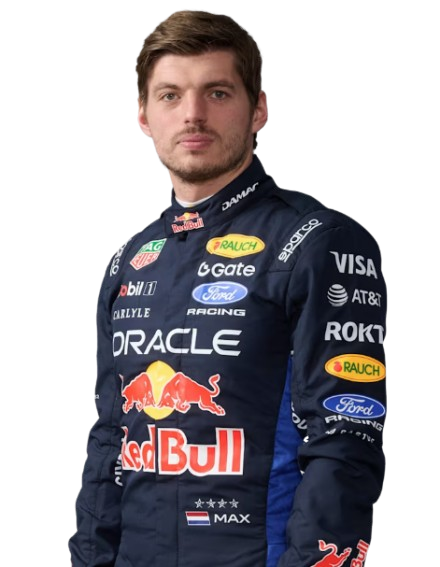

Max Verstappen
- Nationality: Dutch
- Born: September 30, 1997
- Debut: 2015
- Car Number: 1
- Grand Prix Wins: 62
- Pole Positions: 40
- Podiums: 111
Redbull Racing



Max Verstappen has been dominating the Formula 1 world in recent years, winning the World Championship in 2021, 2022, 2023, and 2024. His aggressive driving style, combined with the superior performance of the Red Bull Racing car, has made him a formidable competitor on the track. During his championship reign, Red Bull also claimed the Constructors' Championship in 2022, 2023, and 2024, cementing the team as the most dominant force in the sport. The 2023 season was particularly historic — Verstappen won 19 out of 22 races, the most victories in a single season in F1 history, while Red Bull finished with a record-breaking points total.

Alongside driver success, Red Bull Racing has cemented its legacy by clinching consecutive Constructors' Championships. The brilliant engineering spearheaded by Adrian Newey and strategic masterclasses from the pit wall turned the team into an unstoppable force. From the drafting table to the pit lane, every bolt, wing, and setup decision has been obsessed over with a single goal in mind — winning. Red Bull's factory in Milton Keynes became the heartbeat of the sport, producing cars that consistently pushed the boundaries of what was thought aerodynamically possible.
From Energy Drink to F1 Royalty
Red Bull GmbH purchased the struggling Jaguar Racing team from Ford for a reported $1, inheriting the Milton Keynes factory and a small but talented workforce. Few believed an energy drink company could compete at the highest level of motorsport.
Adrian Newey's RB5 turned heads across the paddock. Sebastian Vettel and Mark Webber combined for six race wins, and Red Bull finished second in the Constructors' Championship — a clear signal that something special was being built.
Four consecutive Drivers' and Constructors' Championships. Vettel became the youngest four-time World Champion in history, and Red Bull's cars were regarded as the most aerodynamically advanced on the grid.
The switch to hybrid power units hurt Red Bull badly. Despite flashes of brilliance from Ricciardo and a young Verstappen, championship glory stayed out of reach.
Max Verstappen's first World Championship came in the most dramatic finale in modern F1 history — a last-lap overtake in Abu Dhabi that changed everything.
Three more Drivers' titles and three Constructors' Championships. The 2023 season — 19 wins from 22 races — may never be matched.
With Isack Hadjar joining Verstappen as the second driver, Red Bull enter a new phase. The challenge now is maintaining their edge as rivals close the gap.

Red Bull's first victory came at the 2009 Chinese Grand Prix, where Sebastian Vettel triumphed in a rain-soaked race.

The most dramatic finale in modern F1 history. Verstappen overtook Hamilton on the final lap to claim his first World Championship.

Red Bull's 19 victories from 22 races in 2023 defined their golden era — the most dominant season in Formula 1 history.